N.Barrett, 1, a) J.E.Rault, J.L.Wang, C.Mathieu, A.Locatelli, T.O.Mentes, M.A.Ni˜no, S.Fusil, M. Bibes, A.Barth´el´emy, D.Sando, W.Ren, 6,7 S.Prosandeev, L.Bellaiche, B.Vilquin, A.Petraru, I.P. Krug, andC.M.Schneider 1) IRAMIS/SPCSI/LENSIS,F-91191Gif-sur-Yvette,France 2) SincrotroneTriesteS.C.p.A.,Basovizza,Trieste34149,Italy 3) InstitutoMadrileodeEstudiosAvanzadosenNanociencia(IMDEA-Nanociencia),CampusdeCantoblanco, Cantoblancos/n28049Madrid,Spain 4) Universit´ed’Evry-Vald’Essonne,BoulevardFran¸coisMitterrand,91025Evrycedex, France 5) Unit´eMixtedePhysiqueCNRS/Thales,1Av.AugustinFresnel,Campusdel’EcolePolytechnique, 91767Palaiseau,France 6) PhysicsDepartment,UniversityofArkansas,Fayetteville,Arkansas72701, USA 7) DepartmentofPhysics,ShanghaiUniversity,99ShangdaRoad,Shanghai200444, China 8) Universit´edeLyon,EcoleCentraledeLyon,InstitutdesNanotechnologiesdeLyon,F-69134Ecullycedex, France 9) Nanoelektronik,TechnischeFakult¨at,Christian-Albrechts-Universit¨atzuKiel,D-24143Kiel, Germany 10) PeterGr¨unbergInstitute(PGI-6)andJARA-FIT,ResearchCenterJ¨ulich,D-52425J¨ulich, Germany (Dated:14June2018) TheapplicationofPhotoEmissionElectronMicroscopy(PEEM)andLowEnergyElectronMicroscopy (LEEM)techniquestothestudyoftheelectronicandchemicalstructureofferroelectricmaterialsisre- viewed.Electronopticsinbothtechniquesgivesspatialresolutionofafewtensofnanometres.PEEM imagesphotoelectronswhereasLEEMimagesreflectedandelasticallybackscatteredelectrons.BothPEEM andLEEMcanbeusedindirectandreciprocalspaceimaging.Together,theyprovideaccesstosurface charge,workfunction,topography,chemicalmapping,surfacecrystallinityandbandstructure.Examplesof applicationsforthestudyofferroelectricthinfilmsandsinglecrystalsarepresented. PACSnumbers:77.80.-e68.37.Xy77.55.-g Keywords:Ferroelectrics,PEEM,LEEM I.INTRODUCTION Theaimofthisoverviewistointroduceandillustrate theuseoffullfieldspectromicroscopytechniquessuchas PhotoEmissionElectronMicroscopy(PEEM)andLow EnergyElectronMicroscopy(LEEM)tostudytheelec- tronicandchemicalstructureofferroelectric(FE)ma- terials.Particularemphasiswillbegiventothestudy ofthinfilmsandtheirelectricalboundaryconditions. Thetermspectromicroscopyisusedtostressthatthese techniquesyieldspectroscopicandmicroscopicinforma- tionsimultaneously.Thisistobedistinguishedfrom microspectroscopywhich,inordertoobtainspatialin- formationoversimilarfieldsofview,reliesonscanninga microfocussedbeam,whosesizedefinesthespatialreso- lution,overthesurface.Thisarticleisnotintendedtobe anexhaustivereview,norisitaimedatPEEMorLEEM specialists.Rather,wehopetogivescientistsworkingon ferroicsystemsabetterideaofthevarietyofinforma- tionwhichmaybeobtainedusingspectromicroscopyon a) Electronicmail:nick.barrett@cea.fr domainstructuredmaterials. Inthelasttwodecades,threemainbreakthroughshave ledtointenseresearchintoferroelectricsandmoregen- erallyferroicmaterials.Onatheoreticallevel,Cohen showedthattheferroelectricstabilitydependsonabal- ancebetweenlongandshortrangeforces. Vanderbilt andKing-Smithdevelopedthemoderntheoryofpolar- izationusingaBerryphaseapproachwhichallowedthe descriptionofthechangeinpolarizationasadisplace- mentofthecentreofchargeoftheWannierfunctions. Nowadays,approachesusingeffectiveHamiltoniansand insomecaseskineticMonte-Carlomethodsarestarting tobridgethegapbetweenthe100atomsystemsoffirst principlescalculationsandexperimentallyobserveddo- mainssizes. InexperimentthewidespreaduseofPiezo responseForceMicroscopy(PFM)inair,controlledat- mosphereandnowincreasinglyundervacuum,allows nanoscaledomainwritingandmeasurementofbothlat- eralandperpendicularpiezocoefficients. 4,5 Finally,ona technologicallevel,advancesinepitaxialthinfilmgrowth haveallowedtheproductionofhighquality,singlecrys- talepitaxialthinfilms,suitableforferroelectricbased devices.Varyingthesubstratelatticeparameterallows strainengineeringwhichcansignificantlychangeval-
uesofremanentpolarization,coercivefieldortheCurie temperature. 6,7 Infundamentalresearch,twodeposition fornearperfectlayerbylayergrowthandPulsedLaser- assistedDeposition(PLD)foritsflexibilityandcontrol ofoxygenstoichiometry. Thenewphysicsemergingfromtwo-dimensionalfilms inthelimitofafewunitcellshasahostofexciting applications.Understandingtheferroelectricproper- tiesofsuchengineeredthinfilmsystemsrequirestak- ingintoaccountnotonlythematerialbutalsoitsinter- faceswithelectrodes,substratesoratmosphere;inother words,theelectricalboundaryconditions. Inthecase ofathinfilmthesecanevendeterminetheferroelec- tricpolarizationstability.Forexample,Junqueraand Ghosezshowedthatthedepolarizingfieldcouldplace alowerlimitonthefilmthicknesscapableofsupport- ingastablepolarization. Thequestionoftheinterface isalsoakeyissueinrealizingmultiferroicheterostruc- tures,demonstratingmagnetoelectriccouplingallowing electricalcontrolofthemagnetizationor,inversely,mag- neticcontrolofthepolarization. Hybridizationbetween filleddorbitalsresponsibleformagnetizationandempty dorbitalsintheferroelectricoxidemaybeonepathto suchcoupling.Severalcouplingmechanismshavebeen identifiedandthesecanbequitecomplex.Forexample, recentresultssuggestthateventhechargeorderingof amagneticlayercanbemodulatedbythepolarization stateofanadjacentferroelectric. Sincethesearecollec- tiveelectronphenomena,highresolutionspectroscopyis necessarytountangletheelectronicstructureresponsible forsuchphenomena.Thus,experimentaltoolswhichcan contributetoafullunderstandingofthesurfaceandnear surfaceelectronicandchemicalstructurearedesirable,if possiblewithspatialresolutionsuitableforinvestigating individualdomainsorevenphenomenalocalizedatdo- mainwalls. Near-fieldtechniquessuchasPFMorscanningsur- facepotentialmicroscopy(SSPM)occupyaprimepo- sitionintheinvestigationofferroelectricdomainstruc- ture.Likealltechniquestheyrequirecarefuluse,and attentionmustbepaidtotheroleofadsorbatesand tointeractionsbetweenthetipandthesurfaceincon- tactmode.However,theycannotprobethefullelec- tronstructureandchemistryofferroelectricsurfaces.In viewofthis,andgiventheincreasingnumberoffields ofapplicationsofengineeredferroelectricsystems(for exampleinpromotingchemisorption ,incatalysis or forphotovoltaics ),complementaryexperimentaltech- niquesarerequiredtounderstandthesecomplexsystems. EarlyexamplesofPEEMappliedtoferroelectricsstudied adsorbateinducedvariationsintheelectronaffinity. 15,16 Fullfieldelectronmicroscopy,coveringPEEM,LEEM andMirrorElectronMicroscopy(MEM),hasrecently startedtoprovideinterestingdataonFEsurfaces.Asa result,itappearsopportunetoreviewthephysicswhich canberevealedbytheuseofthesetechniques.Itisim- portanttonotethatPEEMmayalsobeperformedin X-Rayabsorptionmode(XAS)bymeasuringtheelec- tronyieldfromthesampleasafunctionoftheincident photonenergy.Mainlybecauseofthehighintensitythis techniqueisbetterestablishedandhasalreadybeenused tostudyferroicsystems.TheSchollgroupinBerke- leyhavepioneeredtheapplicationofX-rayabsorption PEEMforthestudyofferroics. Theydemonstrated theuseofX-raymagneticcirculardichro¨ısm(XMCD) PEEMasapowerfulmethodtoimagemagneticdomain ordering. ThepresentreviewconcentratesonLEEM andonphotoemissionbasedPEEMtoprobethesurface electronicstructure,particularlyrelevantforthestudy offerroelectrics. InsectionIItheprinciplesbehindPEEMandLEEM willbepresentedwithanemphasisonthephotoemis- sionprocessunderlyingPEEMbasedmethods.Themain partofthisreviewconsistsofthedifferentcasestudies insectionIII.Thefiveexamplesofstudiesofferroelec- tricsurfaceswhichcanbecarriedoutusingPEEMand LEEMarenotmeanttobeexhaustive,butrathergive anideaoftherichinformationobtainableusingspectro- microscopy.Thefirstexampleillustratestherelationship betweentheworkfunctionasmeasuredinPEEMandthe surfacepolarizationcharge.Thefollowingtwostudies lookatscreeningbysurfacecarbonandphotogenerated electron-holepairs.Thefourthexampleillustrateshow PEEMandMEM-LEEMcanbeusedtoestimatethe polarizationofultra-thin,tunnelingregimefilms.The lastexampledemonstratesthemeasurementofthefull 2Dbandstructureparalleltothesurfaceofasingle,mi- cronsizedin-planeferroelectricdomain.Indeed,there ismuchmoretobedone,bothintermsofquantifica- tionbutalsoinfullyexploitingthespectralinformation available.SectionIVdiscussesboththeadvantagesand presentlimitations/drawbacksofLEEMandPEEMfor studiesofFEsystems.Ashortoutlookcompletesthe overviewinsectionV. II.SPECTROMICROSCOPY PEEMandLEEMaretwodistinct,surfaceimaging techniques;however,theyarealsoextremelycomplemen- tary.Notonlyaretheelectronopticsoftheimaging columnoftenverysimilar,ifnotidentical,thespatial resolutionisoftencomparable.However,inthecaseof PEEMthefundamentalprocessisthephotoelectricef- fect,i.e.photoninandelectronout,whereasinthecase ofLEEMtheprobeisacollimatedelectronbeamand theelasticallyreflectedorbackscatteredelectronsarede- tected.LEEMisthereforeanelectroninandelectronout process.TheinformationcontainedinPEEMandLEEM canbeverydifferentandthecombineduseofbothtech- niquesprovidesextremelyrichinformation. Bothsystemshavebeenusedintheexamplesgiven inthisreview.Recentreviewsprovidemoreextensive technicaldetails. 19–21 Here,wejustdescribethemain characteristicsofeachdesign.ThefirstPEEMexper-
(a)(b) (c)(d) FIG.1.(coloronline)(a)LayoutofaLEEM/PEEMinstrument(LEEMIII,ElmitecGmbH)withmagneticlenses.The sectorfieldseparatestheincomingelectronbeamfromthereflectedorbackscatteredelectrons.Thesamplebiasadjuststhe electronstartvoltage.TL,FLandILarethetransfer,fieldandintermediatelensoftheimagingcolumn.InPEEMmode,an energyanalyzerisusedjustbeforethelastprojectivelenses.(b)Layoutofanenergy-filteredPEEMwithelectrostaticlenses (NanoESCA,OmicronNanotechnologyGmbH).ThedoublehemisphericalanalyzerandthelowelectronenergyinthePEEM columnoptimizestransmissionandgivesalateralresolutionindependentofthespectroscopicresolution.(c,d)Photographsof typicalinstrumentsrepresentedin(a)and(b).In(d)1,2and3arethepositionsfordirectPEEM,smallareaspectroscopy andspectroscopicimaging,4and5arethesamplepositionandthedoublehemisphericalanalyzer. imentwasreportedbyaGermanphysicist,Br¨uche,in the1930s. However,therealriseofLEEMandPEEM startedwiththeuseofmoresophisticated,lowenergy electronlensesinultra-highvacuumandthepioneering workbyTeliepsandBauerinthe1980s. Thesecond qualitativestepwastheadventofdedicatedsynchrotron radiationsources,capableofdeliveringahighbrilliance photonbeamontothesample,makingsub-micronscale PEEMimagingpossibleinareasonableamountoftime. First,weoutlinethetwomaindesignsoflowenergy electronoptics.Thenwepresentthedifferentimaging techniquesusedforthecasestudiespresentedinthisre- view. A.Electronoptics Twobasicdesignconceptsexistinlowenergyelec- tronmicroscopes.Inbothcasesthereisahighextractor field,typically12to24kV,betweenthesampleandthe objectivelens.Thankstothisfield,highelectrontake- offanglesfromthesamplesurfacecanbecollectedand imagedthroughtheelectronoptics.Inthefirstdesign (Fig.1(a)),averyhighvoltage(20kV)isappliedtothe sample,thustheelectronshaveahighkineticenergyin theelectronopticsimagingcolumn,whichiscomposed ofmagneticlenses.ThemainmanufacturersareElmitec andSPECSGmbH.Inthesecond(Fig.1(b)),thesample isbiasedclosetogroundpotentialandafterextractionby ahighvoltagetheelectronsaredeceleratedintheelectro- staticlenssystem.ThemainmanufacturerisOmicron Nanotechnology. 1.Magneticlenses Themagneticlensdesignprovidesaninstrumentsuit- ableforbothLEEMandPEEM.TodoLEEMasector fieldproducedbymagneticlensesusestheLorentzforce toseparateanincidentelectronbeamformedinanillumi- nationcolumnfromthereflectedorbackscatteredbeam. Thus,theopticalaxesofboththeincidentbeamandthe
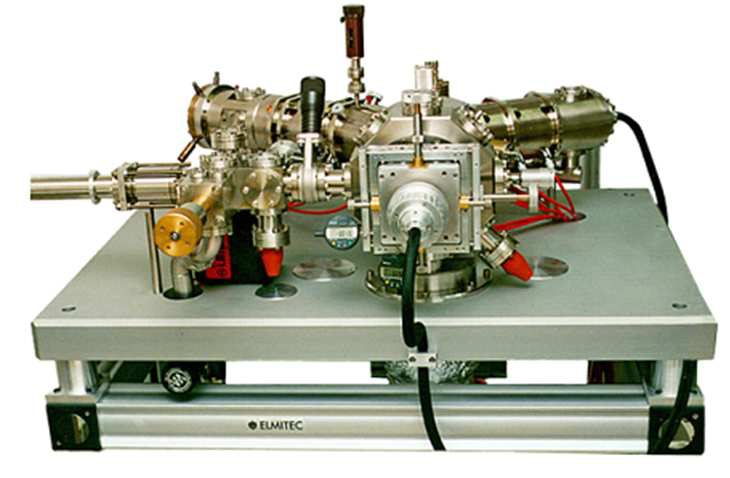 image.3.1[152*99] 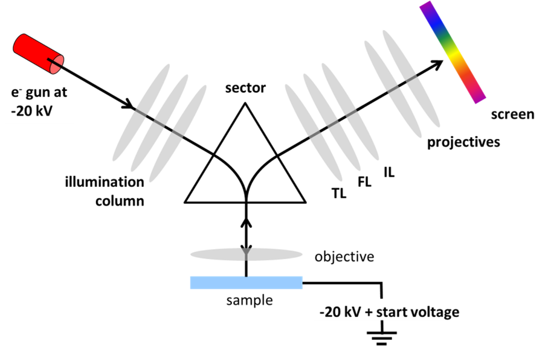 image.3.2[187*119] 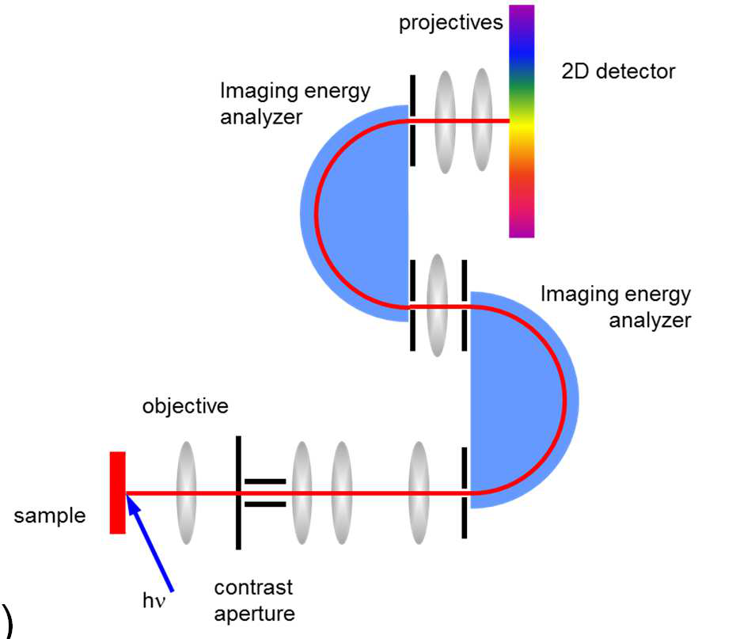 image.3.3[193*168] 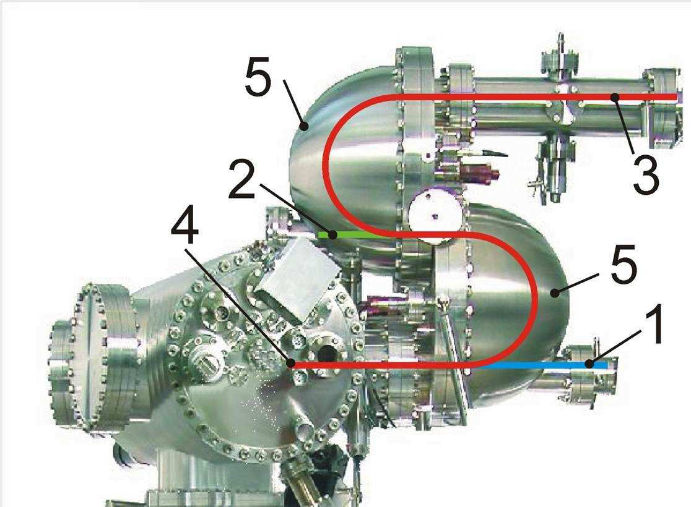 image.3.4[162*119]backscatteredelectronsareperpendiculartothesample surface.Thesectoranglesareeither120 ◦ or180 ◦ .TL, FLandILarethetransfer,fieldandintermediatelensof theimagingcolumn.finallyprojectivelensmagnifythe imageontothedetector.TodoPEEM,theillumination columnisnotusedandaphotonbeamisincidentdirectly onthesamplesurface.Theimagingcolumnisidentical forbothLEEMandPEEM.Aschematicisshownin isparticularlyusefulforhighmagnification,providing thatthelightsourceusesmicro-focusingopticsandthat thesamplecanwithstandhighphotonbrilliance.The electronsareclosetotheopticalaxis,makingaberration correctionandthusultimatespatialresolutionpossible. However,whenenergyanalysisisalsorequired,theelec- tronsundergoastrongretardingvoltagebeforeenter- ingtheanalyzerwithasignificantlossintransmission andspace-chargecanbealimitation.Thebestspec- troscopicresolutionis0.25-0.30eV.Toperformenergy- filteredPEEMwiththisset-up,ahemisphericalenergy analyzerisaddedjustbeforetheprojectivelenses,aset- upcalledaspectroscopicLEEM. Figure.1(c)showsa typicalLEEM-PEEMinstrumentwithmagneticlenses. 2.Electrostaticlenses Theelectrostaticlensdesign(Fig.1(b))canonlybe usedforPEEMsinceasectorfieldisimpossibleto implement. However,theelectronsinthePEEMimag- ingcolumnhaveonlymoderatekineticenergymeaning amuchhigherphasespaceenteringtheenergyanalyzer, andthusamuchhighertransmission.Thenearground potentialofthesampleisaconsiderableadvantageifone needstoapplypotentialstothesample,forexampleto switchtheferroelectricpolarization.Furthermore,the useofadoublehemisphericalanalyzerallowslowpass energiesandhencehighspectroscopicresolutionwithout degradingthespatialresolution.Theriskofradiation damagefromintensephotonbeamsisreducedandspace chargeislessofalimitationbecauseitispossibletouse lowerincidentflux.Figure.1(d)showsaPEEMwith adoublehemisphericalanalyserandelectrostaticlenses. Positions1,2and3showthedetectorpositionsfordirect imagingwithoutenergyfiltering,smallareaX-raypho- toelectronspectroscopyandspectroscopicimaging.The sampleisatposition4and5indicatesthedoublehemi- sphericalanalyzer. B.PEEM Whenaphotonofenergyh ν isincidentonasample, alloftheelectronswhosebindingenergyissmallerthan h ν canundergoatransitionfromtheirinitialstate.For anelectrontobephotoemittedfromthematerialand detected,itmustovercometheworkfunction,Φ,the potentialbarriertobeovercometoextractthephoto- electron. Thephotoemissionprocessisrepresentedschemati- callyinFig.2.Toknowtheelectronicandchemicalstruc- tureofamaterialonehastodeducetheinitialstateof theelectronc(lefthandsideofFig.2)fromthemeasured photoemissionspectrum(righthandsideofFig.2).In thesolid,electronsoccupydiscrete,localizedstates(core levels)ormoredelocalizedstates(valenceband,andfor metals,theconductionband).Thebindingenergyisspe- cifictotheemittingatomandisasensitivesignatureof thelocalchemicalandelectronicenvironment.Theva- lenceelectronsareresponsiblefortheelectronicstructure andreflecttheinsulating,semiconductingormetallicna- tureofthematerial.Itisalsothevalenceelectrons,and forconductingsamples,thestatesattheFermilevel, whichdeterminemanykeypropertiesfortechnological applications,suchaselectrontransport,magnetization, spinpolarization,orelectron-electroncorrelation.Thus, fromaphotoelectronspectrum,knowledgeofthework function φ ( φ =E F − E ,whereE F istheFermilevel andE thevacuumlevel)andthephotonenergyallows deductionoftheinitialstatesoftheanalyzedelectrons. FIG.2.(coloronline)Schematicenergylevelsinaphotoemis- sionexperiment.Theinitialstate(left)isexcitedbyaphoton h ν ,givingthefinalstateasmeasuredbythespectrometer (right).Theworkfunction, φ ,isthedifferencebetweenthe localvacuumlevelandthesampleFermienergy,E − E F .
SincethebeginningofX-rayPhotoelectronSpec- troscopy(XPS)withSiegbahn’sNobelPrizewinning workinthelate1950’s, XPShasevolvedintoastan- dardtechniqueforacquiringchemicalandelementalin- formationofsurfaces 25,27 .Althoughfirstattemptsinac- quiringlateralinformationwithXPSstartedmorethan 20yearsago,thesetechniqueshavenot,asyet,achieved widespreaduse.LaboratoryimagingXPSareslowand spatialresolutionistypically ? − µ mforreasonable acquisitiontimes.Photoemissionmicroscopes[10,11]im- provethisfigurebysometwoordersofmagnitudein thelaboratoryandthreeordersofmagnitudeusingsyn- chrotronradiation.Atypicalfieldofview(FoV),notto beconfusedwiththelateralresolution,isseveraltensof microns.However,adirectconsequenceofthehighlat- eralresolutionisaconsiderablyreducedoveralltransmis- sionoftheelectronopticalsystem.Thus,theuseofthese instrumentsforlaboratoryexperimentsmaybelimited tolowenergyapplicationsintheUltra-violetPhotoelec- tronSpectroscopy(UPS)range.Thisdisadvantagecan beovercomebyusinghighbrillianceundulatorbeamlines atthesynchrotronforimagingXPSexperiments. PEEMcanbeperformedjustwithelectronopticsand a2Ddetector,recordingthesecondaryelectroncurrent. EarlyPEEMworkhasbeencarriedoutusingsuchasys- tem.Today,stillmanyPEEMexperimentsfocussingon absorptionspectroscopymeasuretheelectronyieldand donotrequireanenergyanalyser.Byaddinganen- ergyfiltertotheelectronoptics,theimageofthesam- plesurfaceintheFoVisobtainedatawell-definedelec- tronkineticenergy.Thesame2Ddetectionsystemis usedtoprovideanimageofthemicroscopicfieldofview. Suchaspectromicroscopyset-upisshownschematically inFig.3(a).Theenergyfilterallowsselectedregions ofthephotoemissionspectrumtobeimaged.Energy regionsofinterestsuchasthephotoemissionthreshold, corelevelandvalencebandregionsarehighlightedbythe shadedrectanglesinFig.3(b).Thereisaslightvariation inenergy,callednon-isochromaticity,alongthevertical axis,correspondingtothedispersiveplaneoftheana- lyzer,butthisisusuallysmall,typicallyafractionofan electron-volt,andisaccountedforindataanalysis. Inenergy-filteredoperation,imagestacksarerecorded byscanningthesamplevoltagewithfixedanalyzerpass energyandautomaticrefocusingoftheobjectivelens. Thethree-dimensionaldatastack, I ( x,y,E ),therefore containsineachimage-pixelmicroscopicandspectro- scopicinformation,andcanbeanalyzedoff-linebystan- darddatareductiontechniques,e.g.removalofphotoe- missionbackgroundorprincipalcomponentanalysisto reducethenoiseincorelevelimages. Thedatasetsare easilyexploitedbychoosinganyregionofinterestand extractingthecorresponding I ( E )curve. Usingtheelectrostaticlensdesign,thesampleisref- erencedtoground,thuswithknowledgeoftheanalyser workfunction,theonsetofthephotoemissionspectrum atlowenergyispreciselytheworkfunctionofthesam- plesurface. 29,30 Inthemagneticlensdesign,theenergy isreferencedtotheelectronsourceworkfunction. C.k-PEEM Thestandardmethodformeasuringthedispersionre- lationsofthebandstructureisAngularResolvedPhoto- ElectronSpectroscopy(ARPES).InARPES,theenergy- resolvedphotoelectronintensitydistributionisusually measuredasafunctionofanglealongahighsymmetry directionofthecrystal.Conservationofthecomponent oftheelectronwavevectorparalleltothesamplesurface allowsonetomapoutthedispersionrelationsasafunc- tionoftheinitialstatewave-vector.Inpracticalunits thewavevectorisgivenbyk parallel =0 . √ E K sinθ , whereE K isthephotoelectronkineticenergyand θ the photoelectronemissionanglewithrespecttothesurface normal.Inordertomapthedispersionrelationsoverthe fullBrillouinzonethesamplemustberotatedthrough ◦ resultinginlongacquisitiontimes.InPEEM,the highextractorfieldcollectsthephotoelectronemission overawideangularrange.Byusingasuitabletransfer lensthediffractionplane(closetotheback-focalplane) ofthePEEMcanbeimaged.Imagingthediffraction planeinPEEMproducesanangularintensitymapforall azimuthssimultaneously.Energy-filteringtransformsthe angulardistributionintoamapofphotoelectronintensity asafunctionofwave-vectorparalleltothesurface,i.e.a horizontal,constantenergycutinreciprocalspace.This techniqueisknownask-resolvedPhotoEmissionElectron Microscopy(k-PEEM).Forexample,theFermisurface canbeacquiredinasingle-shotexperiment. Foratyp- icalPEEMsettings,thereciprocalspacedimensionofthe imageis ± . ˚ A − .Thus,thistechniqueallowsvisualiza- tionofthefull2Dstructureoftheelectrondispersion relationsfrommicronsizedregionsordomains,see,for example,arecentstudyoffew-layergrapheneonSiC. Animportantvariantofreciprocalspaceimagingisthe useofanapertureinanintermediateimageplanewhich allowsonetoperformdirect µ -ARPESonmicronscale regions. AsinrealspacePEEMdescribedabove,the datasetsarealsothreedimensional, I ( k x ,k y ,E ). D.MEM InMEMtheincidentelectronsareretardedtoafew volts,calledthestartvoltage(SV)bythehighsample bias.AtverylowSV,electronsarereflectedbythe potentialabovethesurface(MEM),whereasathigher valuestheypenetratethesampleandarebackscattered (LEEM).Mirrorelectronmicroscopy(MEM)usingalow energyelectronmicroscope,allowsnon-contact,full-field imagingofthesurfacetopographyandpotentialwith12- 15nmspatialresolution.Thetransitionfromthereflec- tionoftheelectronstothebackscatteringregime,the MEM-LEEMtransition,imagestheelectrostaticpoten- tialabovethesurface.MEMcontrastisthereforere-
∆ ∆∆ ∆ x Detector 2D Microscope (PEEM) ∆ ∆∆ ∆ E h ν νν ν secondary electrons core levels valence band spectral width= h ν νν ν - Φ ΦΦ Φ Kineticenergy(eV) Threshold (a) (b) FIG.3.(coloronline)(a)Schematicofaspectromicroscopyexperiment.Electronopticsconservetheprovenanceoftheelectrons inthesamplefieldofview.Theenergyanalyzerfiltersthekineticenergy,givingaspectroscopicimageofthephotoemission onthe2Ddetector.(b)Typicalphotoemissionspectrum.Theshadedrectangleshighlightthehighintensityphotoemission thresholdatlowkineticenergy,thecorelevelregionandthevalenceband.InPEEMthekineticenergyisreferencedwith respecttotheFermilevelofthesampleholder. latedtoworkfunctiondifferencesanditisanidealtool toprobe,forexample,surfacechargedifferencesindo- mainswithapolarizationcomponentperpendicularto thesurface,pointingeitherinwards(P − )oroutwards (P + ). Atthesurface,anin-planeelectricfieldwillbecreated attheboundarybetweenoppositelypolarizeddomains duetothefixedcharge.Dependingonthewidthofthe spacechargeregionaroundthedomainwall,thisfield canattainvaluessignificantwithrespecttotheextrac- torfield,deviatingthereflectedelectronsinadirection paralleltothesurface.Thedeviationduetothebuilt-in fieldatapnjunctionhasalreadybeenusedinemission microscopy. 34,35 ThusMEMcanbeusedtostudythefull surfaceelectricaltopography. ThefirstdemonstrationofMEMtoprobethesurface potentialofdifferentlypolarizedferroelectricdomains wasreportedbySpivaketal.usinganextremelysimple electronlensandsinglecrystalBaTiO . Cherifietal. reportedpolarizationinducedcontrastinthin,epitaxial BiFeO (BFO)filmswithPFMwrittendomains. One ofthemainchallengesisthequantificationofthesurface chargefromthemeasurementofthesurfacepotential, sincethelatterdecreasesawayfromthesurface. E.LEEM LEEMimagessurfacesusingelasticallybackscattered lowenergyelectrons.Forsinglecrystalsystemsboth realandreciprocalspaceinformationisavailable.The lowkineticenergymakesLEEM,likephotoemission,in- trinsicallysensitivetothesurfaceandnearsurfacere- gion.LEEMgivesinformationnotonlyonthesurface morphology,butitisalsosensitivetotheelectronicand crystalstructure.In-situcrystalgrowthorevensurface diffusionprocessescanbemonitored.Furthermore,by scanningthestartvoltage,theemptystatesinthecon- ductionbandareprobed.Thishasbeenusedtoexplore quantumoscillationsintheback-scatteredelectronsig- nalfor2Dsystems.Theresultscanbedirectlyinter- pretedintermsoftheconductionbandstructure,for exampleonfew-layergraphene. Finally,ifthefocalor diffractionplaneisimagedinLEEM,thenoneobtains a µ -LEEDimageofthesamplesurface. Thedatasets areintheformof3Dstacks: I ( x,y,SV )forLEEMand MEM; I ( k x ,k y ,SV )for µ -LEED. III.APPLICATIONS InthissectionwepresentfivestudiesofFEsystems usingfullfieldelectronspectromicroscopy.Thefirst studywasdoneusingaNanoESCAinstalledatthe TEMPObeamlineattheSOLEILsynchrotron(Saint Aubin,France).ThescreeningstudyofPZTandthe bandstructureofBTOwereperformedattheNanospec- troscopybeamlineattheElettrasynchrotron(Trieste, Italy)usingaspectroscopicLEEM.Thephotogenerated chargescreeningstudywascarriedoutusingalabora- toryinstrumentattheCEASaclay(France).Thestudy ofthethicknessdependenceofthepolarizationinBiFeO usedaNanoESCAinstrumentattheOmicronNanotech- nologypremisesinTaunusstein(Germany)andtheCEA Saclaylaboratoryinstrument.
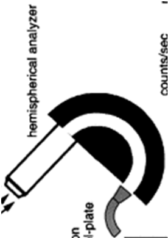 image.6.1[60*84] 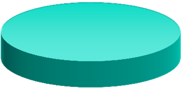 image.6.2[77*38] 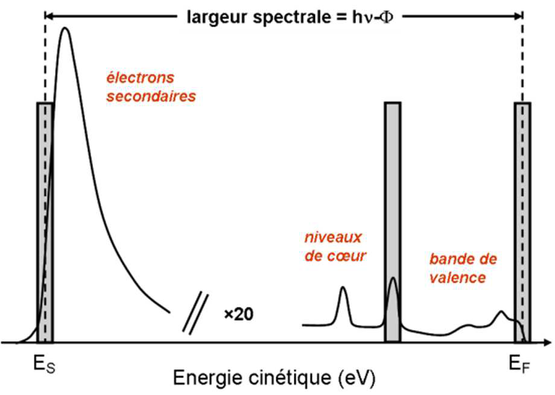 image.6.3[200*142]FIG.4.(coloronline)(a)Energy-filtered,thresholdimageofaBaTiO (BTO)(001)singlecrystalshowingthreemainintensity levels,E − E F =3 . 85eV.(b)Thresholdspectraasextractedfromthe(solid)rectanglesin(a).(c)Photoemissionthreshold mapobtainedusingapixel-by-pixelfittothethresholdspectra. A.Polardomaincontrast Thefirstexampleshowsanunpublishedexampleof howenergy-filteredPEEMcanbeusedtoidentifydiffer- entlypolarizeddomainsatthesurfaceofaferroelectric. ThesamplewasaBaTiO (001)singlecrystal.Before wentashortexposure( ∼ 10minutes)inairatroomtem- peraturetoaUVlamp.TheUVradiationcreatesozone whichreactswiththesamplesurfacecleaningitofmost organiccontamination.Aninsulatorchargesduringpho- toemissionthereforethesamplewasthenannealedunder vacuumat700 ◦ Cproducingoxygenvacanciestoprovide sufficientconductivitywhilstmaintainingtheferroelec- tricphase.Thisisalsosufficienttoremoveanyresid- ualsurfacecarbon. ThelefthandimageofFig.4is takenatakineticenergyof3.85eV,measuredwithre- specttothemetallicsampleholder,witha34 µ mFoV and95eVphotonenergyusingsynchrotronradiation. Therearethreemainlevelsofintensityatagivenenergy. Athigherkineticenergythereiscontrastinversion(not shown),indicatingspatiallyresolvedworkfunctionvari- ations.Scanningthefullthresholdspectrumgivesa3D dataset.Thethresholdspectrafortheregionsofinterest indicatedbytherectanglesareshowninFig.4(b).They showthecharacteristic,sharprisingedgeofthephotoe- missionspectrumandthebroader,secondaryelectron peak.Threedistinctphotoemissionthresholdsareob- served.Performingapixelbypixelanalysis,fittingthe shapeofeachthresholdspectrumindependentlygivesthe thresholdmapshowninFig.4(c).Thevaluescorrespond todomains(inorderofdecreasingthreshold)withpolar- izationpointingoutfromthesurfaceintovacuum,along thesurfaceandintothesurface.Thus,energy-filtered PEEMcanaccuratelymapthedistributionofpolardo- mainsatthesurface. DomainrecognitionbyPEEMhasrecentlybeenused todemonstratetheexistenceofpolardomainsinaBTO singlecrystalwellabovethethebulkCurietemperature andhasbeenlinkedtoastabilizationofthetetragonal distortionbyanionicsurfacerelaxation. B.Adsorbatescreening FIG.5.(coloronline)(top)electronreflectivitycurvesfrom PFMwrittenP + andP − domainsinas-receivedPZT.(bot- tom)Sameafterannealinginoxygen.TheinsetshowstheP + (inner),P − (outer)PFMwrittensquaresandthesurround- ingunwrittenimprintarea.TheMEM-LEEMtransitionis takenasthemidpointinthedropinreflectivity.TheFoVis about15 µ m. ReprintedwithpermissionfromAppl.Phys. Lett.97,222903(2010).Copyright2010AmericanInstitute ofPhysics. SurfacepolarizationchargeinFEmaterialscanbe screenedbyavarietyofmechanisms:intrinsic(charge carriersordefectsinthebulk),extrinsic(chemicalen-
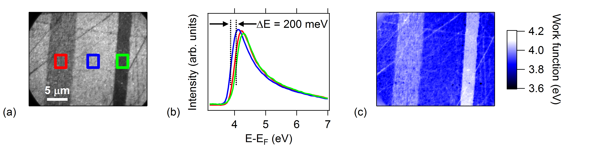 image.7.1[453*114]vironmentoradsorbates), domainordering,orevena combinationoftheabove.Forexample,chemisorption of(OH) − andprotonscanleadtoimportantchanges intheelectricalboundaryconditions andwaterfilm canplayanactiveroleindomainswitching. Kruget al.studiedtheeffectofsurfacecarboncontaminationon thesurfacechargescreeningofPFMwrittenmicron-scale domainsinPZT. A(001)-orientedPbZr . Ti . O (PZT)layerwasgrownbyhighpressuresputteringon aconductingSrRuO (SRO)backelectrodewhichit- selfwasdepositedonSrTiO (001)singlecrystalsub- strate.ThePZTstoichiometrywaschosennearthemor- photropicphaseboundarytoassureamaximumpiezo- electricresponse. Thelayerthicknessof30nmwasbe- lowthethresholdforstrainrelaxation,ensuringalow defectdensityandahighpolarizationnormaltothesam- pleplane.Theoutersquareof(10x10) µ m waswritten byapositivebiasof+5Vcreatinganegativeimage chargebelowthesurfaceandthusaP − state(inward directedpolarization).Thepolarityofaninner(5x5) µ m squarewasreversedbya-5Vbias(P + ).Theexte- rior,i.e.,unwrittensamplearea,exhibitedanetpositive polarity,probablyduetoaFEimprintinthefilmaf- tergrowthandcoolingtoroomtemperature.ThePZT layerwascoveredwithaplatinummaskwithopenfields tofacilitatethelocationoftheFEdomains.Inaddi- tion,themaskprovidedenergycalibrationofthepho- toemissionspectrawithrespecttothePt4fpeaksand theFermilevel.Energy-filteredXPEEMattheC1s corelevelwasusedtocheckthelevelofsurfacecontami- nation.Then,theMEM-LEEMtransitionwasmeasured beforeandaftercleaningbyin-situannealinginoxygen (4 . × − mbarat400 ◦ Cforthreehours).Theelec- tronreflectivitycurvesfortheP + ,P − andasgrown areasareshowninFig.5.Beforecleaninginoxygen thecontrastintheelectronreflectivityislow,consis- tentwiththehighsurfacecarbonconcentration,mea- suredbyXPEEM,whichprovidespartialscreeningof thesurfacecharge.Thereducedsurfacepotentialdif- ferenceisascribedtocarboncontamination,screening thecontrastexpectedfromwrittendomainswithoppo- sitepolarization.Afteroxygenannealing,clearcontrast appears,reflectingasurfacepotentialdifferencebetween theP + andP − domains.AscanbeseenfromFig.5,the MEM-LEEMtransitionhappensatlowerstartvoltage fortheP + (inner)thanfortheP − (outer)samplearea, reflectingthefactthatthesurfacepotentialishigherfor theP + polaritythanforP − .Theincreasedcontraston thecleansurfaceissupportedbyDFTcalculationsofa nine-layerPbO/TiO stack(withoutadsorbates)inan externalelectricfield.Thestabilizedout-of-planepolar- izationleadstoapositive(negative)energyshiftofthe surfacebandstructureforP + (P − ).Assumingconstant electronaffinity,theMEM-LEEMtransitionshouldthen beshiftedtolower(higher)startvoltages,inqualitative agreementwithexperiment. FIG.6.(coloronline)Reflectivitycurvesbefore(solidsym- bols)andafter(opensymbols)exposureofaBTO(001)single crystaltoUVlight.Insets:MEMimagebefore(upperright) andafter(bottomleft)exposuretoUVlight. Reprinted withpermissionfromAppl.Phys.Lett.101,092902(2012). Copyright2012AmericanInstituteofPhysics. C.Screeningbyphotogeneratedchargecarriers Inthisexample,thescreeningbymobilechargecarri- erswasstudied. ABTO(001)singlecrystalwasozone cleanedbeforeannealingat700 ◦ Cfor3hoursatabase pressureof1 × − mbartoremoveresidualcontami- nationsuchasH OorCO andtocreatesufficientoxy- genvacanciestoavoidchargingduringmeasurements. ThesamplewastransferredundervacuumfortheMEM- LEEManalysis.A254nmUVlampilluminatedthesur- facewith20mW / cm powerfluxtocreateelectron-hole pairs. TherighthandinsetofFig.6isaMEMimagefromthe cleansampleatastartvoltageof-1.8Vina40 µ mFoV. Twointensitylevelsareobservedcorrespondingtodiffer- entelectrostaticpotentialsabovethesurface.Theinten- sitycontrastinversesasthestartvoltageisincreased.We identifythetworegionsasP + andP − polarizeddomains (seebelow).Theelectronreflectivityofthetwodomains asafunctionofstartvoltage,measuredwithrespectto thereflectedintensityat-5V,isplottedinthemain partofFig.6(fullsymbols).TheMEM-LEEMtransi- tionisthemidpointofthedecreaseinthereflectivity curve.Forthecleansurface,theMEM-LEEMtransition shiftis400mV.Suchalargevalueisattributedtoop- positepolarizationsperpendiculartothesurface,point- ingeitheroutwards(P + )orinwards(P − ).Itcannotbe duetodomainswithdifferentmagnitudesorientedinthe samedirectionbecausetheydonotscreenthedepolariz- ingfield.ASSPM/PFMstudybyShaoetal.reported a150-200mVshiftbetweenc + andc − domains;how- ever,theirdatawereacquiredinairandthepotential contrastwasprobablyattenuatedbyadsorbates. After afewtensofsecondsofexposuretoUVlight,theshift intheMEM-LEEMtransitionbetweenthetwodomains isstronglyreduced,reachingasteadystatevalueof90
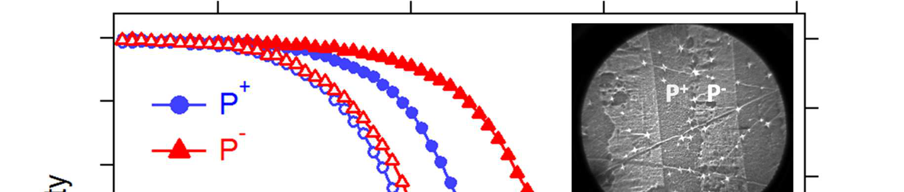 image.8.1[240*51] 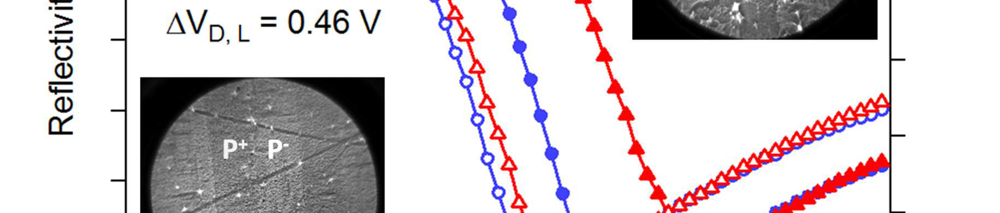 image.8.2[240*51] 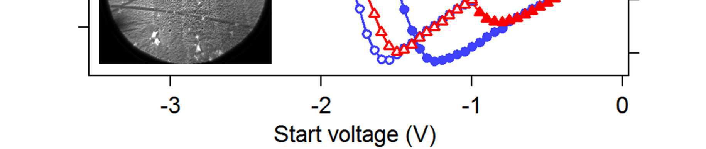 image.8.3[240*51] image.8.4[14*15]FIG.7.(coloronline)(a)Timedependenceofintensitycon- trastduetoscreeningbyUV-generatedelectron-holepairs (b)TimedependenceofintensitycontrastafterUVlightis switchedoff.(c)Schematicshowingthedriftofphotogener- atedchargecarriersinanoutofplanepolarizedferroelectric slab. ReprintedwithpermissionfromAppl.Phys.Lett. 101,092902(2012).Copyright2012AmericanInstituteof Physics. mVafter200s. ThereflectivitycurvesafterUVexposureareplottedas opensymbolsinFig.6.Thephotoemissionintensitydue totheUVilluminationisalsodetected,however,itwas morethanthreeordersofmagnitudelowerthanthatof theMEM-LEEMsignalandcanbeneglected.Ascanbe seeninthelefthandinsetofFig.6,thedomainstructure isunchangedbytheUVilluminationbutthecontrastis weakened.WhentheUVlightisswitchedoff,thecon- trastrevertstotheoriginalvalue,althoughataslower rate.Theexperimentisrepeatablewithoutalteringthe domainstructure.TheaveragevalueoftheMEM-LEEM transitionshiftsby∆V off,on =0.46Vtolowerstartvolt- agewhenilluminationisswitchedon.UVillumination createsnotonlyelectron-holepairsinthematerialbut alsoinducesphotoemissionfromthematerial.Thelat- tergivesrisetoaseparateeffectwithrespecttothesur- facechargescreeningandthephotoemissionpositively chargesthesurface.TheabsoluteMEM-LEEMtransi- tionshiftofeachdomainisthereforeconsistentwithan equal155mVchangeinP + (P − )surfacepotentialby electron(hole)screening.TheshiftintheMEM-LEEM transitionmeasurespotentialchangeperpendicularto thesurface,therefore,inthecaseofin-planepolarization onlyaphotoemissioninducedshifttolowerstartvolt- agewouldbeexpectedwithnooffsetduetoscreeningby electron-holepairs. Tostudythesurfacechargedynamics,werecorded fixedstartvoltage(-1.8V)MEMimagesat1frame persecondunderUVillumination.Thetimedepen- denceofthedomainintensitycontrast,definedby∆I= I(P + ) − I(P − ),whentheUVlightisswitchedonand offisplottedinFig.7(a)and(b).Fitting∆Iusinga simplerateequation,∆I=A+Bexp( − t/τ ),givestime constants τ on =41 . 3sforlight-onand τ off =104 . 2sfor light-offprocesses.Thesevaluesareseveraltimeslarger thanthosefoundbyShaoetal. withalowerpowerUV lamp.However,theBTOhasbeenvacuumannealedat ◦ Ccreatingoxygenvacancieswhichcanactascharge traps increasingthetimeconstant.UVillumination generateselectron-holepairsnearthesurfacebecauseof thelargephoto-excitationcrosssection.Underthein- ternalpolarizationfield,electrons(holes)drifttothe P + (P − )surfaceandsomearetrappedinvacanttrap statesasillustratedinFig.7(c).Thus,aspace-charge fieldopposingthepolarizationfieldincreasesuntilequal tothepolarizationfieldoruntiltherateofelectron-hole pairgenerationequalsthatofrecombination.Whenthe lightisswitchedoff,thetrappedcarriersarethermally activatedanddiffusealongtheconcentrationgradientto eventuallyrecombine. Thespatialredistributionand retrappingofphotocarriersgivetheobservedexponen- tialdecays. Thisanalysisassumesthatthescreeningbythepho- togeneratedchargeonlyresultsinarigidshiftofthere- flectivitycurveandlinearitybetweentheMEM-LEEM transitionshiftandtheintensitycontrast.Theformeris clearlyagoodassumption,whilethelatterisanapprox- imation.Amorerefinedanalysisrequiresknowledgeof therelationshipbetweenthetransitionshiftandinten- sitydifferenceatconstantSVor,ideally,theacquisition ofreflectivitycurvesduringthescreeningprocess. D.Polarizationofultra-thinfilms Amajorissueforprospectivenanoscale,strain- engineeredferroelectricapplicationsisthedecreaseof theremanentpolarizationofultra-thinfilms.Fer- roelectriccapacitorsforexamplemayexhibitacrit- icalthickness. 50,51 Lichtensteigeretal. haveshown thatthedecreaseinremanentpolarizationofPbTiO (PTO)thinfilmsbetween20and2.4nmonNb-doped STOsubstratesfollowsthatofthetetragonality(ratio oftheout-of-planetoin-planelatticeparameterc/a). OnLa . Sr . TiO (LSMO)PTOpolydomainswere formedbelow10nmwithhightetragonality. The formationofapolydomainstatehasbeensuggested forSRO/PZT/SROcapacitorswithPb(Zr,Ti)O thick- nessesbelow15nm. PertsevandKohlstedtshowedthe importanceofmisfitstrainforthecriticalthicknessofthe monodomain-polydomainstabilityforPTOandBTO. Directelectricalmeasurementsofthepolarization-field (P(E))loopinultrathinferroelectricfilmsareachal- lengebecauseofleakagecurrentforthicknessesbelowa fewtensofnm. Theybecomeimpossibleinthetun- nelingregimeforultra-thinfilms(5nmorless)which, furthermore,isofthesameorderasthecriticalthick- nessestimatedfromLandau-Ginzburg-Devonshire(LGD)
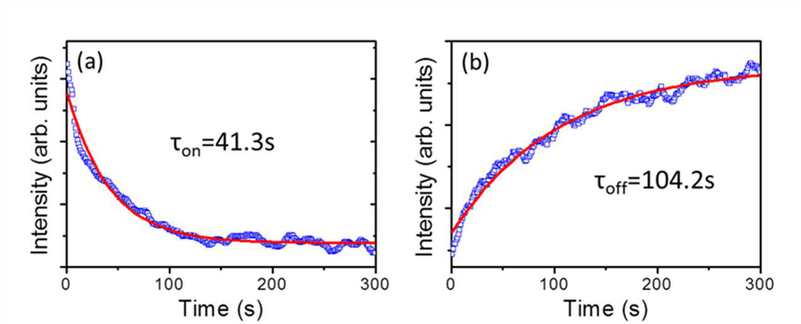 image.9.1[241*97] 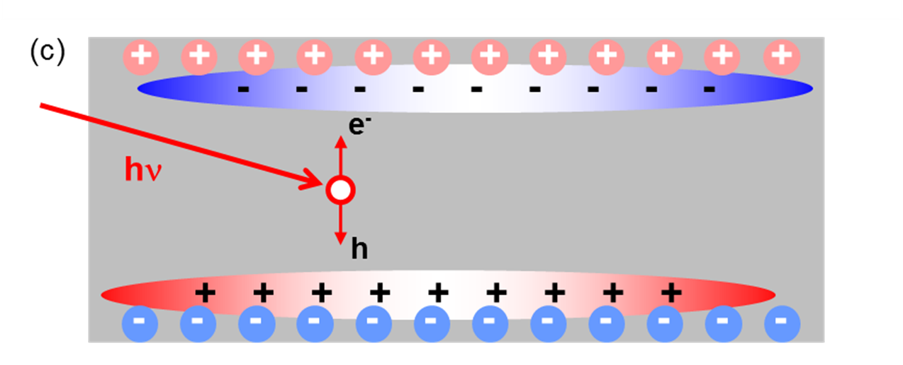 image.9.2[241*97]1.5 1.0 0.5 E ( e V ) (a) + P - 4.6 4.4 4.2 4.0 3.8 W o r k F u n c t i o n ( e V ) P + P - (b) 0.4 0.2 0.0 ∆ φ F ( e V ) 0.4 0.2 0.0 ∆ E ( e V ) (c) 1.0 0.5 0.0 P z / P m a x Thickness (nm) (d) FIG.8.(coloronline)(a)MEM-LEEMtransitionmapob- tainedbyapixelbypixelanalysisofthe3Ddataset(b)PEEM thresholdspectrafromPFM-polarizedP + andP − domains inepitaxialBFO.(c)ThicknessdependenceoftheMEM- LEEMtransition(redsquares)andthephotoemissionthresh- old(blackcircles)contrastsasmeasuredbyMEM-LEEMand PEEM,respectively.(d)P z /P max calculatedfromPEEM(red squares)andMEM-LEEM(blackcircles).Redcurveisfitto PEEM/LEEMdatawithh eff =5.6nm.Bluediamondsare P z /P max valuesusedfornumericalsimulations.Reprinted withpermissionfromRaultetal. Copyright2012Ameri- canPhysicalSociety. elastictheoryforpolarizationstability. 57,58 Raultetal. havestudiedthepolarizationthickness dependenceofstrainedBiFeO (BFO)filmswithcon- stanttetragonality.Filmsintherange3.6to70nm werestudied.PolarizeddomainswerewrittenusingPFM andboththeworkfunctionandelectronreflectivitywere measuredusingPEEMandMEM-LEEM.Contrastinthe MEM-LEEMtransitionandthephotoemissionthresh- oldisclearlyobservedinFig.8(a)and(b).Theseare notimagesbutMEM-LEEMtransitionandphotoemis- sionthresholdmaps.Theyareobtainedbyfittingthe electronreflectivityorthresholdspectrumpixelbypixel acrossthefieldofviewandtheplottingthevaluesona falsecolorscale.TheFoVis40and33 µ m,respectively. Thebenchmarkwasa70nmfilmwhosepolarizationwas measuredbyclassicP-Eloop.Thepolarizationofthe thinnerfilmscanthenbeestimatedfromcontrastwith respecttothoseofthe70nmfilm. TheP + /P − domaincontrastsfalltozero,asshown inFig.8(c),belowacriticalthicknessof7-8nm.This compareswellwiththevalueof5.6nmobtainedfromthe 3DLGDmodeloncetheBFO/bottomelectrodeinterface layerthicknessistakenintoaccount.Thefallinthefilm polarizationisshowninFig.8(d)togetherwiththefit usingthe3DLDGtheoryandacriticalthicknessof5.6 nm.EffectiveHamiltoniancalculationsshowedthatthis rapiddecreaseisduetothestrongerdepolarizingfield, forcingaphasetransitionfromasingletoamoresta- blestripedomainstate,explainingwhythetetragonality remainsconstantatthehighvalueof1.05whiletheav- eragedomainpolarizationdropstozero.However,these stripesarepredictedtobeonlyafewnanometreswide andarethereforesmallerthanthetypicallateralresolu- tionavailable. AberrationcorrectedLEEM,discussed below,maybeabletoimagedirectlysuchatransition. Nevertheless,thisexampleshowsthatPEEM-LEEMcan beusedtoestimatepolarizationinmicronscaledomains evenforfilmsinthetunnelingregime. E.Bandstructure Measuringthedispersionrelationsoftheelectronic bandsinoxidesisnotoriouslydifficultevenwithhighly orderedsamplesbecauseofchargingunderphotoemis- sion.Thefewexamplesofangle-resolvedphotoelectron spectroscopystudiesofoxidesintheliteratureconcern eithermetallicoxides,suchasniobiumdopedSrTiO orinsulatingoxidessuchasSrTiO withametallic2D electrongasatthesurface. 61,62 Thefinalexampleillus- tratestheuseofreciprocalspacePEEM,k-PEEM,to obtainthefull2Dbandstructureofasingleferroelectric domain.Thesamplepreparationfollowedtheozonepro- tocolandin-situvacuumannealingat700 ◦ Cdescribed previouslyinordertoobtainacleansurfacewithsuffi- cientoxygenvacanciestoavoidsubstantialcharging.The instrumentwasadjustedsothatasinglein-planedomain filledthefieldofview.Thetransferlensoftheoptics wasthenusedtoobtainanenergyfilteredimageofthe backfocalplane.Thesampleazimuthwasdetermined bythe µ -LEEDmodeshowingthatthedomainhasa × 1surfacestructure.Thiscalibratesthedimensions andorientationofthereciprocalspaceimage.Then,the undulatorbeamwasswitchedonforPEEM.Byscanning thephotoelectronkineticenergyforincidentphotonen- ergyof52eV,constantenergycutsinreciprocalspace wereobtainedfromthetoptothebottomofthevalence band.Theseareshownas2ndderivativemapsofthe intensityasafunctionofelectronwave-vectorparallelto thesurfaceinFig.9(c)Thesearepreliminaryresultsand afullerversionwillbepublished. Theintegratedintensity(Fig.9(b))istypicalofBTO asobtainedbyultra-violetphotoelectronspectroscopy; however,theconstantenergycutsinreciprocalspace (Fig.9(c))revealtherichbandstructureofBTO.Be- tween7.7and8.2eVinparticularthereisahorizontal mirrorplanebutnoverticalmirrorplaneintheBril- louinzone.Thismaybespectroscopicevidencethat theimageddomainisindeedin-planepolarized,i.e.the tetragonaldistortionisparalleltothesurfaceinducing theasymmetryinthebandstructure.Wenotethattyp- icalARPESexploresonlyasinglehighsymmetrydirec- tion,forexampleΓX,whereasink-PEEMthe3Ddataset allowssimultaneousexplorationoftheelectronbandsfor
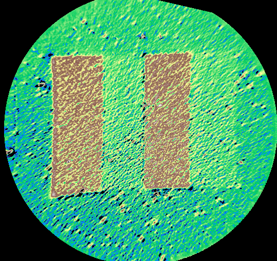 image.10.1[81*81] image.10.2[4*52]FIG.9.(coloronline)(a)SchematicoftheBrillouinzoneforBTO(001).(b)Integratedphotoemissionintensitymeasuredfrom asinglein-planedomain.ThesampleholderFermilevelisat48.75eV.Thewave-vectorresolvedconstantenergycutswere acquiredintheshadedregion(c)k-resolvedconstantenergycutsinreciprocalspacethroughthevalenceband(shadedareain (b))showingtherichbandstructure. allk parallel wave-vectors.Itisthereforepossibletoex- plorethedetailsoftheelectronicbandstructure,forex- amplewavefunctionsymmetryacrosstheBrillouinzone, inasingleferroelectricdomain.Atpresenttheminimum FoVisabout1-2 µ m,limitedbytheelectronoptics. IV.ADVANTAGESANDLIMITS A.Perspectivesforferroelectrics Spectromicroscopyisafullfieldtechnique,thusno scanningofthesampleisnecessary.Therelativelylarge fieldsofviewwithrespecttoatypicalPFMimagewill oftenallowsimultaneousvisualizationofmanydomains. Dynamicalexperimentsofdomainorderingaretherefore possible.BothPEEMandMEM/LEEMarenon-contact techniques,avoidingpossibleunwantedtip-surfaceinter- actionsofnearfieldmethodssuchasPFMandCon- ductiveAtomicForceMicroscopy(CAFM).Thespectro- scopiccapabilityobtainedbyenergy-filteringinPEEM givesdirectaccesstotheinitialstatesoftheelectrons. Thusafulldescriptionoftheelectronicandchemical structureispossible.PEEMmaybeperformedwitha varietyoflightssources:inthelaboratory,withlasersor withsynchrotronradiation.Theuseofsynchrotronra- diationallowstuningofthephotonenergy:optimization ofthephotoelectronyield,adjustmentoftheelectronki- neticenergy,thusthedepthsensitivity.Mostundulator beamlinesallowvariablepolarization,thuscircularlypo- larizedlightcanbeusedtoperformX-raymagneticcircu- lardichroismbasedPEEMtostudyferromagneticstates, whereaslineardichroismallowsstudyoftheferroelectric distortion,forexampleattheTiL , edge. Finally,the wave-vectorresolutionaffordedinthek-PEEMmodeal- lowsimmediatevisualizationofthedispersionrelations inthesurfaceplane. B.Surfacepreparation PEEMandLEEMexperimentsmustbecarriedout inultrahighvacuum(UHV),mainlytoavoidarcingbe- tweenthesampleandtheobjectivelens,whichwould createhighinstantaneouscurrents,potentiallydamag- ingtothesample.However,anUHVenvironmenthas theadvantagethatitispossibletostudyrelativelyclean surfaces,freeofextrinsicadsorbateslikewaterwhichare inevitablypresentinairbasedexperimentsandwhich candramaticallychangetheelectricalboundarycondi- tions.Controlledsurfacepreparationisthereforecru-
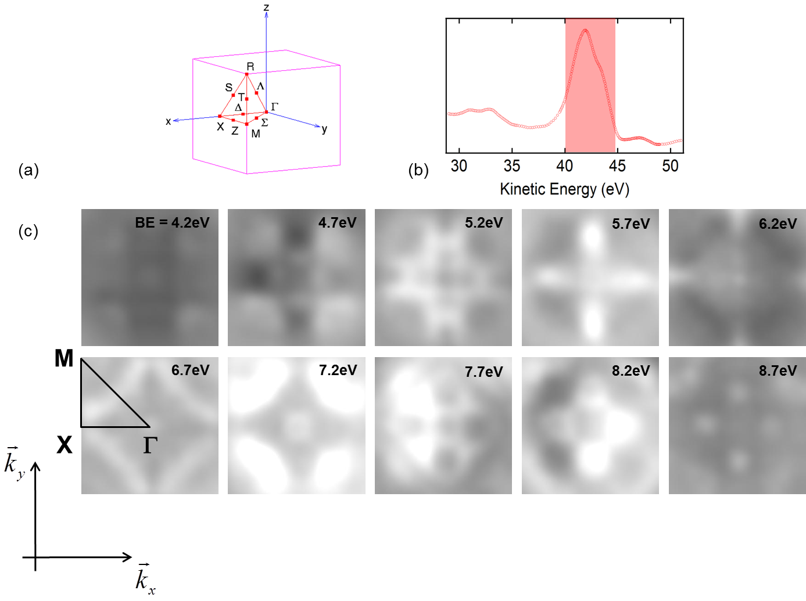 image.11.1[396*296]cial.Traditionalsurfacesciencetechniquessuchasion beamsputteringtocleanthesurfaceareexcludedbe- causeofthedamagetheycausetothesurfacestructure. Carefulannealingin10 − − − mbaroxygenenviron- mentmaybesufficienttocleanthesamplesurfacein- situ. Wehavedevelopedaprotocolofex-situcleaning usingarapidexposuretoozone,immediatelypriorto introducingthesampleintotheUHVsystem.However, withoutdoubt,theverybestmethodwouldbetoassem- blethegrowth(PLD/MBE),characterization(PFM)and PEEM/LEEManalysistoolsinthesameUHVsystem, with in-situ transfer.Asecondimportantproblemisthe insulatingnatureofferroelectricmaterials.Somewayis necessarytoavoidoratleastreducechargingeitherby electronsorasaresultofphotoemission.Inthecaseof electroncharginginLEEM,onesolutionproposedhas beentocombinetwoelectronbeamsofwidelydifferent energies.Atlowenergy,thesampleisnegativelycharged whereasathigherenergiesthenumberofsecondaryelec- tronscreatedissuchthatthesamplechargespositively. Inprincipleitisthereforepossibletofindanequilib- riumpositionofzerocharge.Anotherpossibilityisto annealsamplestocreatesufficientoxygenvacanciesto makethesamplelessinsulating.Eachoxygenvacancy freestwoelectronswhichreduce,inthecaseofBTO,two Ti 4+ ionstoTi 3+ .However,caremustbetakennotto overdopethesample.ArecenttheoreticalstudyofBTO suggeststhatbeyondadopinglimitof1 . × cm − atetragonaltocubicphasetransitionoccurs. C.Lateralresolutionanddepthsensitivity Thereareseveralcontributionstothelimitsinspatial resolutionofPEEMandLEEM.InPEEM,themostfre- quentlyencounteredproblemissimplythesignallevel.In manycasesitisthetransmissionofthedetector(PEEM optics,energyfilter)whichreducesthestatisticsandis oftenresponsibleforthepracticalspatialresolution. Thisisoneofthereasonsforpreferringmoreintensesyn- chrotronradiationsources.Byreducingthephotoelec- tronkineticenergythetransmissionofthePEEMsystem canalsobeincreased,furthermorethephotoionization cross-sectioncanbeoptimizedbyadjustingthephoton energy.Thekeypointistoincreasetheratioof useful to total photoelectronsenteringthePEEMoptics.Inthis respect,successfulaberrationcorrectionwouldsignifi- cantlyimproveinstrumentaltransmission. InLEEM, countingstatisticsarerarelyaproblembecauseofthe highintensity,monochromaticincidentelectronbeam. Thesecondlimitationtothespatialresolutioncomes fromimperfectionsintheelectronlenses,givingriseto chromaticandsphericalaberrations. Highelectronen- ergiesorsmallerfieldsofviewcanreducethese,butin thelattercaseintensitycanbecomeaproblem.Someat- temptsataberrationcorrectionhavebeenmade,notably forelectronopticssystemsbasedonmagneticlenses, however,asyet,aberrationcorrectionhasonlybeen proveninLEEMandroutineuseremainschallenging. Thetypicallateralresolutioninenergy-filteredPEEM ofcorelevelsisoftheorderof100nm.Thisimproves to50nmformeasurementsoftheworkfunction,mainly duetothemuchhighersignal.InLEEM,20nmisa routinevalue.Althoughgenerallyworsethanthespatial resolutionobtainableinPFM,individualdomainscan stilleasilybeimagedandstudied.Directlyvisualizing domainwalls,typicallyafewnmwide,isnotpossiblein PEEMandLEEM,however,thespacechargeregioncre- atedatchargeddomainwallsmayberesolved.Indeed, thephotoemissionthresholdmapinFig.8(b)showsev- idenceofspacechargeattheboundarybetweenP + and P − domains. Onemightthinkthatthehighextractorfield,typi- cally100kV/cm,couldswitchthepolarizationinthin films.Wehaveneverobservedthisforawidevarietyof ferroelectricmaterialsinbothsinglecrystalandthinfilm forms.Thegeometryofthesampleholdermeansthatall ofthesampleisatthesamepotential(closetoground inthecaseofanelectrostaticPEEM),thusthepotential differenceacrossafilmduetotheextractorfieldiszero. AsinXPS,themoderatephotoelectronkineticener- giesusedinPEEMlimitthedepthsensitivitytoafew nm.PEEMisparticularlysensitivetosurfacechem- istryandelectronicstructure.Ifonewishestoextend themethodtothestudyofburied,heterogeneousin- terfaces,forexamplebetweenanelectrodeandaferro- electric,higherenergyphotonswillbenecessary.This isextremelydemandingforPEEMbecauseoftherapid decreaseoftheinstrumentaltransmissionfunctionwith electronenergy.Nevertheless,somehardX-rayPEEM hasbeenperformed; andtheuseofsensitive,event countingdetectorsystemsnowmakethisarealpossi- bility. D.Beameffects Highintensityundulatorradiationcanalsohavea numberofunwantedeffects.Theincidentphotonbeam resultsinhighratesofelectron-holepaircreation. This maybeusefulifonewantstostudyscreeningphenomena likeintheexamplegivenabove ortostudythechem- istryofcatalysis.Ontheotherhand,iflongeracquisition timesarerequiredforastudyofcorelevelbindingen- ergies,electron-holepairscanscreensurfacechargeand thustheinternalfield,resultinginashiftinthemeasured bindingenergies. Thisproblemhastobeassessedfor eachsample.Forexample,thinfilmsamplescansome- timesbesufficientlyconductivetoeasilyevacuatephoto- generatedcharge. Despitethedesirabilityofhighintensityphotonbeams, onecannotindefinitelyincreasethephotonbrilliancein themicroscopefieldofview.Locatellietal.haveshown thatbeyond10 photons/s,spacechargeeffectsoccur eitheratthesamplesurfaceornearthefirstcross-over pointoftheelectronoptics,distortingtheimage. For-
tunately,mostsynchrotronbeamlinesarejustbelowthis threshold,butwhenusingmicro-focusingcaremustbe taken. Samplechargingduetotheemissionofphotoelectrons inPEEM,orduetotheinjectionofelectronsfromthe LEEMcanalsodistortimagesorcausespectacularspec- tralshifts,particularlyforhighlystoichiometric,insulat- ingsamples,i.e.withfewdefects,oxygenvacanciesor forsinglecrystals.Againtheseriousnessoftheproblem mustbeassessedineachcase.Onepossibilityistocare- fullyannealinvacuumsinglecrystalsamplesaswehave doneforBTO(001)tocreatesufficientoxygenvacancies whilstmaintainingtheferroelectricphase.Anotherway toovercomechargingistoheatthesampleduringmea- surement,providingthatthisdoesnotmodify,forexam- ple,theferroelectricphasebeingstudied. Finally,directbeamdamagemustalsobeconsidered. ThehighestintensityandhardX-raybeamlinescande- liverincidentbeamcurrentsoftheorderof1nA.Inhigh vacuumtheenergytransferredtothesamplecaneasily giverisetoreductionofcationspecies.Elementssuchas PbinPZTorBiinBFOareparticularlysusceptibleto metallization. V.OUTLOOK MostsynchrotronsnowofferPEEMinstrumentation; however,accessisnotalwaysstraightforwardbecauseof thehighdemandforbeamtime.Furthermore,proposals tostudyferroelectricsareintrinsicallymorecomplexbe- causeoftheinsulatingnatureofthematerialsinvolved andtheirhighsensitivitytointenseundulatorradiation. TheuseoflaboratorybasedPEEM,forexamplewithUV lampsorfocusedHeI/IIdischargesourcesmaytherefore beaninterestingalternative.Laboratorybasedlasers, particularlyiffrequencydoubledandusedinthe2or 3photonmodemayalsobeanextremelygoodalterna- tivelightsource.However,laserbasedPEEMrequires carefulattentiontoaverageandpeakpoweroutputs.In general,highrepetitionrates(MHz)aremandatoryinor- dertoavoidspacechargeeffectsinthePEEMoptics. Femtosecondlaserscouldbeusedtostudy,forexample, domainswitching,wheretheswitchingtimesofthelocal atomicdistortionsareonthescaleofthenanosecond. Ithasbeenacceptedtoalargeextentthatthepo- larizationstategivesrisetoarigidshiftintheelectron bands,similartotheeffectofdopinginsemiconductors. However,thereisnoreasonwhythismustalwaysbethe case.InBTO,thedistortionaroundtheTiO octahe- draisprincipallyresponsibleforthesoftphononmode associatedwiththeferroelectricstate.InPZTitisthe movementofthePbatomswhichmakesthebiggestcon- tribution,i.e.thetypeAcationratherthantheB-cation. Theworkondynamicalcharge,notablybyGhosez, em- phasizesthatthemeasurablequantityisthechangein polarizationassociatedwithanatomicdistortion.Thus ratherthandiscussingtheeffectivevalencestateofanion oneshouldthinkintermsofdynamicalchargetensors. Thesecanbequitelarge,andverydifferentfromone atomtoanotherandoneorbitaltoanother.Astudyof thechangeinthecorelevelbindingenergieswithpolar- izationshouldthereforeyieldpreciousdataondynamical chargetensors. ReciprocalspacePEEM,k-PEEM,couldbecomean extremelypowerfultoolsincemuchoftheresearchof magnetoelectriccouplingisstartingtofocusonorbital overlaps orhybridization attheinterfacebetweena magneticandferroelectricmaterial.Moregenerally,such atechniquecouldprovidevaluableexperimentaldatato comparewithfirstprinciplescalculationsof,forexam- ple,theelectronicstructureofaferroelectricdomainin contactwithametalelectrode. Magnetoelectriccouplingbetweenaferromagneticand aferroelecticcouldbedirectlyimagedbyacombi- nationofX-rayabsorptionandphotoemissionPEEM. Thegrowinginterestintheuseofmultiferroicmaterials forspintronics meansthatspinpolarizedPEEMand LEEMareexcitingprospects. 75,76 SpinpolarizedLEEM canprobebothinandoutofplanemagnetizationby meansofthespindependentexchangescattering. Afinaldirectionofresearchwhichwillbenefitfrom PEEMandLEEMtechniquesisthebehaviorandthe characterizationofstructuresondevicescales.Using suitable,customizedsampleholders,itispossibletowire upforexampleasinglemicroscopiccapacitorand,using thehighspatialresolutionstudyitsresponsetocurrent orvoltage. TheuseofhardX-rayscouldprovideac- cesstothechemistryandelectronicstructureofboth electrode/ferroelectricinterfacesinasymmetric,micro- scopiccapacitors. Nanoscalecontrolofdomainwallsin structuredferroelectricfilmsisnowleadingtonewap- plicationsincatalysisorphotovoltaics. Bytheaddition ofsuitableelectrodesandcontacts,deviceresponseson themicroscopicscalecouldbestudiedusingspectromi- croscopyunderdifferentelectricalconditions. ACKNOWLEDGMENTS WethankK.WinklerandB.Kr¨omker(OmicronNan- otechnology)forsupportofsomeofthePEEMmeasure- ments,D.Martinottifortechnicalassistancewiththe LEEMexperimentsattheCEA-SaclayandE.Jacquet, C.Carr´et´eroandH.B´eaforhelpinsamplepreparation atCNRS/Thal`es.WeacknowledgeElettraandSOLEIL forprovisionofsynchrotronradiationandtheNanospec- troscopyandTEMPObeamlinestaffforsupport.This workwassupportedbytheFrenchNationalResearch Agency(ANR)projectsSurf-FER,M´elo¨ıc,Multidolls andNomilops.C.M.benefitedfromagrantoftheCEA Nanosciencesprogramme.J.R.isfundedbyaCEA PhDgrant.W.R.acknowledgestheEasternScholar ProfessorshipatShanghaiInstitutionsofHigherEduca- tion,ShanghaiMunicipalEducationCommission,and supportfromNationalNaturalScienceFoundationof
ChinaunderGrantNo.11274222.L.B.thanksthefi- nancialsupportofAROGrantNo.W911NF-12-1-0085, andONRGrantsNo.N00014-11-1-0384,N00014-12-1- 1034andNo.N00014-08-1-091.L.B.alsoacknowledges NSFDMR-1066158andDMR-0701558,andDepartment ofEnergy,OfficeofBasicEnergySciences,undercon- tractER-46612fordiscussionswithscientistssponsored bythesegrants. R.E.Cohen,Nature ,136(1992). R.D.King-SmithandD.Vanderbilt, ,1651(1993). S.Prosandeev,D.Wang,W.Ren,J. ´ I˜niguez,andL.Bellaiche, AdvancedFunctionalMaterials,DOI:10.1002/adfm.201201467 (2012). S.V.Kalinin,A.N.Morozovska,L.Q.Chen,andB.J.Ro- driguez,ReportsonProgressinPhysics ,056502(2010). I.Infante,S.Lisenkov,B.Dup´e,M.Bibes,S.Fusil,E.Jacquet, G.Geneste,S.Petit,A.Courtial,J.Juraszek,L.Bellaiche, A.Barth´el´emy,andB.Dkhil,PhysicalReviewLetters , 057601(2010). D.G.Schlom,L.-Q.Chen,C.-B.Eom,K.M.Rabe,S.K.Streif- fer,andJ.-M.Triscone,AnnualReviewofMaterialsResearch ,589(2007). K.J.Choi,M.Biegalski,Y.L.Li,A.Sharan,J.Schubert, R.Uecker,P.Reiche,Y.B.Chen,X.Q.Pan,V.Gopalan,L.-Q. Chen,D.G.Schlom,andC.B.Eom,Science ,1005(2004). M.Dawber,K.M.Rabe,andJ.F.Scott,Rev.Mod.Phys. , 1083(2005). J.JunqueraandP.Ghosez,Nature ,506(2003). R.RameshandN.A.Spaldin,NatureMaterials ,21(2007). C.A.F.Vaz,J.Hoffman,Y.Segal,J.W.Reiner,R.D.Grober, Z.Zhang,C.H.Ahn,andF.J.Walker,PhysicalReviewLetters ,127202(2010). D.Li,M.H.Zhao,J.Garra,A.M.Kolpak,A.M.Rappe,D.A. Bonnell,andJ.M.Vohs,NatureMaterials ,473(2008). J.L.GiocondiandG.S.Rohrer,J.Phys.Chem.B ,8275 (2001). J.Seidel,D.Fu,S.-Y.Yang,E.Alarcon-Llado,J.Wu, R.Ramesh,andJ.Ager,PhysicalReviewLetters ,126805 (2011). W.-C.Yang,B.J.Rodriguez,a.Gruverman,andR.J.Ne- manich,AppliedPhysicsLetters ,2316(2004). U.Lev,S.Heun,A.Locatelli,andE.Zolotoyabko,Ultrami- croscopy ,169(2005). T.Zhao,A.Scholl,F.Zavaliche,K.Lee,M.Barry,A.Doran, M.P.Cruz,Y.H.Chu,C.Ederer,N.A.Spaldin,R.R.Das, D.M.Kim,S.H.Baek,C.B.Eom,andR.Ramesh,Nature Materials ,823(2006). J.Heron,M.Trassin,K.Ashraf,M.Gajek,Q.He,S.Yang, D.Nikonov,Y.-H.Chu,S.Salahuddin,andR.Ramesh,Physical ReviewLetters ,1(2011). M.Escher,K.Winkler,O.Renault,andN.Barrett,Journal ofElectronSpectroscopyandRelatedPhenomena 178-179 ,303 (2010). C.Schneider,C.Wiemann,M.Patt,V.Feyer,L.Plucinski, I.Krug,M.Escher,N.Weber,M.Merkel,O.Renault,and N.Barrett,JournalofElectronSpectroscopyandRelatedPhe- nomena(2012),10.1016/j.elspec.2012.08.003. A.LocatelliandE.Bauer,JournalofPhysics:CondensedMatter ,093002(2008). E.Br¨uche,Z.f.Physik ,448(1933). W.TeliepsandE.Bauer,Ultramicroscopy ,57(1985). M.Escher,N.Weber,M.Merkel,C.Ziethen,P.Bernhard, G.Sch¨onhense,S.Schmidt,F.Forster,F.Reinert,B.Kr¨omker, andD.Funnemann,JournalofPhysics:CondensedMatter , S1329(2005). S.H¨ufner,S.Schmidt,andF.Reinert,NuclearInstrumentsand ,8(2005). C.Nordling,E.Sokolowski,andK.Siegbahn,Phys.Rev. , 1676(1957). D.Briggs, SurfaceAnalysisbyAugerandX-rayPhotoelectron Spectroscopy ,editedbyD.BriggsandJ.T.Grant(IMPublica, 2003). J.WaltonandN.Fairley,JournalofElectronSpectroscopyand RelatedPhenomena ,29(2005). A.Bailly,O.Renault,N.Barrett,L.F.Zagonel,P.Gentile, N.Pauc,F.Dhalluin,T.Baron,A.Chabli,J.C.Cezar,and N.B.Brookes,Nanoletters ,3709(2008). L.F.Zagonel,M.B¨aurer,A.Bailly,O.Renault,M.Hoffmann, S.-J.Shih,D.Cockayne,andN.Barrett,JournalofPhysics: CondensedMatter. ,314013(2009). B.Kr¨omker,M.Escher,D.Funnemann,D.Hartung,H.Engel- hard,andJ.Kirschner,ReviewofScientificInstruments , 053702(2008). C.Mathieu,N.Barrett,J.Rault,Y.Y.Mi,B.Zhang,W.A. deHeer,C.Berger,E.H.Conrad,andO.Renault,Phys.Rev. B ,235436(2011). T.O.Mente?andA.Locatelli,JournalofElectronSpectroscopy andRelatedPhenomena,10.1016/j.elspec.2012.07.007(2012). S.A.Nepijko,N.N.Sedov,G.Sch¨onhense,andM.Escher, Journalofmicroscopy ,132(2002). S.A.Nepijko,A.Gloskovskii,N.N.Sedov,andG.Sch¨onhense, JournalofMicroscopy ,89(2003). G.V.SpivakandS.Zheludev,Kristallografiya ,115(1959). S.Cherifi,R.Hertel,S.Fusil,H.B´ea,K.Bouzehouane,J.Allibe, M.Bibes,andA.Barth´el´emy,PhysicaStatusSolidi(RRL)- RapidResearchLetters ,22(2010). H.Hibino,H.Kageshima,F.Maeda,M.Nagase,Y.Kobayashi, andH.Yamaguchi,Phys.Rev.B ,75413(2008). M.S.Altman,Journalofphysics.Condensedmatter:anInsti- tuteofPhysicsjournal ,084017(2010). F.Chen,R.Schafranek,A.Wachau,S.Zhukov,J.Glaum, T.Granzow,H.vonSeggern,andA.Klein,JournalofApplied Physics ,104106(2010). A.H¨ofer,M.Fechner,K.Duncker,M.H¨olzer,I.Mertig,and W.Widdra,PhysicalReviewLetters ,087602(2012). I.Krug,N.Barrett,A.Petraru,A.Locatelli,T.O.Mentes,M.A. Nin?o,K.Rahmanizadeh,G.Bihlmayer,andC.M.Schneider, AppliedPhysicsLetters ,222903(2010). D.D.Fongetal.,Phys.Rev.Lett. ,127601(2006). J.Shin,V.B.Nascimento,G.Geneste,J.Rundgren,E.W.Plum- mer,B.Dkhil,S.V.Kalinin,andA.P.Baddorf,NanoLetters ,3720(2009). A.Bruge?re,S.Gidon,andB.Gautier,JournalofApplied Physics ,052016(2011). J.Rodr´ıguezContreras,H.Kohlstedt,A.Petraru,A.Gerber, B.Hermanns,H.Haselier,N.Nagarajan,J.Schubert,U.Poppe, C.Buchal,andR.Waser,JournalofCrystalGrowth ,210 (2005). J.L.Wang,B.Vilquin,andN.Barrett,AppliedPhysicsLetters ,092902(2012). R.Shao,M.P.Nikiforov,andD.A.Bonnell,AppliedPhysics Letters ,112904(2006). A.C.Papageorgiou,N.S.Beglitis,C.L.Pang,G.Teobaldi, G.Cabailh,Q.Chen,A.J.Fisher,W.A.Hofer,andG.Thorn- ton,ProceedingsoftheNationalAcademyofSciences ,2391 (2010). D.Kim,J.Jo,Y.Kim,Y.Chang,J.Lee,J.-G.Yoon,T.Song, andT.Noh,PhysicalReviewLetters ,237602(2005). A.Petraru,H.Kohlstedt,U.Poppe,R.Waser,A.Solbach, U.Klemradt,J.Schubert,W.Zander,andN.A.Pertsev,Ap- pliedPhysicsLetters ,072902(2008). C.Lichtensteiger,J.-M.Triscone,J.Junquera,andP.Ghosez, PhysicalReviewLetters ,047603(2005). C.Lichtensteiger,M.Dawber,N.Stucki,J.-M.Triscone,J.Hoff- man,J.-B.Yau,C.H.Ahn,L.Despont,andP.Aebi,Applied PhysicsLetters ,052907(2007). V.Nagarajan,J.Junquera,J.Q.He,C.L.Jia,R.Waser,K.Lee,
Y.K.Kim,S.Baik,T.Zhao,R.Ramesh,P.Ghosez,andK.M. Rabe,JournalofAppliedPhysics ,051609(2006). N.PertsevandH.Kohlstedt,PhysicalReviewLetters ,257603 (2007). H.B´ea,S.Fusil,K.Bouzehouane,M.Bibes,M.Sirena,G.Her- ranz,E.Jacquet,J.-P.Contour,andA.Barth´el´emy,Japanese JournalofAppliedPhysics ,L187(2006). A.BratkovskyandA.Levanyuk,PhysicalReviewLetters , 3177(2000). P.Maksymovych,M.Huijben,M.Pan,S.Jesse,N.Balke,Y.- H.Chu,H.Chang,A.Borisevich,A.Baddorf,G.Rijnders, D.Blank,R.Ramesh,andS.Kalinin,PhysicalReviewB , 014119(2012). J.Rault,W.Ren,S.Prosandeev,S.Lisenkov,D.Sando,S.Fusil, M.Bibes,A.Barth´el´emy,L.Bellaiche,andN.Barrett,Physical ReviewLetters ,267601(2012). M.Takizawa,K.Maekawa,H.Wadati,T.Yoshida,a.Fujimori, H.Kumigashira,andM.Oshima,PhysicalReviewB ,113103 (2009). W.Meevasana,P.D.C.King,R.H.He,S.-K.Mo,M.Hashimoto, A.Tamai,P.Songsiriritthigul,F.Baumberger,andZ.-X.Shen, Naturematerials ,114(2011). A.F.Santander-Syro,O.Copie,T.Kondo,F.Fortuna, S.Pailh`es,R.Weht,X.G.Qiu,F.Bertran,A.Nicolaou, A.Taleb-Ibrahimi,P.LeF`evre,G.Herranz,M.Bibes,N.Reyren, Y.Apertet,P.Lecoeur,A.Barth´el´emy,andM.J.Rozenberg, Nature ,189(2011). E.Arenholz,G.vanderLaan,A.Fraile-Rodr´ıguez,P.Yu,Q.He, andR.Ramesh,PhysicalReviewB ,140103(2010). R.Schafranek,S.Payan,M.Maglione,andA.Klein,Physical ReviewB ,30(2008). Y.Iwazaki,T.Suzuki,Y.Mizuno,andS.Tsuneyuki,Physical ReviewB ,214103(2012). A.Bailly,O.Renault,N.Barrett,T.Desrues,D.Mariolle,L.F. Zagonel,andM.Escher,JournalofPhysics.CondensedMatter ,314002(2009). A.Locatelli,T.O.Mente?,M.A.Ni˜no,andE.Bauer,Ultrami- croscopy ,1447(2011). R.M.Tromp,J.B.Hannon,A.W.Ellis,W.Wan,A.Berghaus, andO.Schaff,Ultramicroscopy ,852(2010). C.-L.Wu,P.-W.Lee,Y.-C.Chen,L.-Y.Chang,C.-H.Chen,C.- W.Liang,P.Yu,Q.He,R.Ramesh,andY.-H.Chu,Physical ReviewB ,020103(2011). N.M.Buckanie,J.G¨ohre,P.Zhou,D.vonderLinde,M.Horn- vonHoegen,andF.-J.MeyerZuHeringdorf,JournalofPhysics. CondensedMatter ,314003(2009). P.Ghosez,J.Michenaud,andX.Gonze,PhysicalReviewB , 6224(1998). M.Niranjan,J.Velev,C.-G.Duan,S.Jaswal,andE.Tsymbal, PhysicalReviewB ,104405(2008). M.Stengel,P.Aguado-Puente,N.Spaldin,andJ.Junquera, PhysicalReviewB ,235112(2011). J.Allibe,S.Fusil,K.Bouzehouane,C.Daumont,D.Sando, E.Jacquet,C.Deranlot,M.Bibes,andA.Barth´el´emy,Nano letters ,1141(2012). F.Kronast,J.Schlichting,F.Radu,S.Mishra,T.Noll,and H.D¨urr,SurfaceandInterfaceAnalysis ,1532(2010). M.Suzuki,M.Hashimoto,T.Yasue,T.Koshikawa,Y.Naka- gawa,T.Konomi,A.Mano,N.Yamamoto,M.Kuwahara,M.Ya- mamoto,S.Okumi,T.Nakanishi,X.Jin,T.Ujihara,Y.Takeda, T.Kohashi,T.Ohshima,T.Saka,T.Kato,andH.Horinaka, AppliedPhysicsExpress ,026601(2010). K.Man,R.Zdyb,S.Huang,T.Leung,C.Chan,E.Bauer,and M.Altman,PhysicalReviewB ,184402(2003). C.Wiemann,M.Patt,S.Cramm,M.Escher,M.Merkel, A.Gloskovskii,S.Thiess,W.Drube,andC.M.Schneider,Ap- pliedPhysicsLetters ,223106(2012). S.Y.Yang,J.Seidel,S.J.Byrnes,P.Shafer,C.-H.Yang,M.D. Rossell,P.Yu,Y.-H.Chu,J.F.Scott,J.W.Ager,L.W.Martin, andR.Ramesh,Naturenanotechnology ,143(2010).